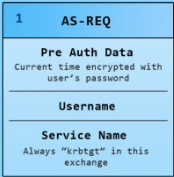
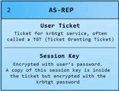
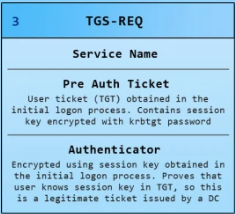
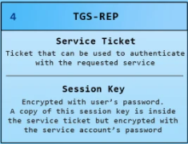

Kerberos
Overview
- Trusted third-party authentication protocol designed for TCP/IP networks
- Uses symmetric cryptography, usually AES
- Currently Kerberos v5 is in use, v4 is not secure since it only supports DES
- Widely used as the basis for single-sign on (SSO)
- Is the default authentication package for Microsoft Windows (replaced and better than NTLM)
- Usually NTLM is used with IP addresses, Kerberos is used with hostnames
- Spec
Advantages
- Passwords are never sent accross the network
- Encryption keys are never directly exchanged
Kerberos Model
- Client and server are entities on the network
- Key Distribution Center (KDC): consists of a Kerberos Authentication Server and a Ticket Granting Server (TGS)
- In Windows Active Directory, the KDC is the Domain Controller and TGS is listed under the krbtgt user account
- Kerberos keeps a database of clients and their secret keys
- For human users, the secret key is an encrypted password
- Client needs to get a separate ticket from the TGS for each service they wish to use
Protocol
Abbreviations
- c = client
- s = server
- v = beginning and ending validity time for a ticket
- t = timestamp
- Kx = x's secret key
- Kx, y = session key for x and y
- {m}Kx = m encrypted in x's secret key
- Tx, y = x's ticket to use y
- Ax, y = authenticator from x to y
Credentials
- Two types of credentials (messages): tickets and authenticators
- Tickets:
- Used to pass the identity of the client for whom the ticket was issued securely to the server
- A ticket is good for a single server and a single client until it expires
- No one on the network can read or modify the ticket as it passes through the network
- Form: Tc, s = s, {c, a, v, Kc, s}Ks
- Note: a is the client's network address
- Authenticators:
- Additional authenticator, presented within the ticket
- Purpose: proves that the authenticator knows the session key and prevents replay attacks with a timestamp
- The timestamp threshold for Kerberos is usually within 2 minutes
- Unlike the ticket, it can only be used once
- Client generates it every time they want to use a service on the server
- Form: Ac, s = {c, t, key}Kc, s
- Note: t is a timestamp and key is an optional additional session key
Kerberos Version 5

| 1 (AS-REQ). Client to Kerberos: | c, tgs |  |
| 2 (AS-REP). Kerberos to client: | {Kc, tgs}Kc, {Tc, tgs}Ktgs |  |
| 3 (TGS-REQ). Client to TGS: | {Ac, tgs}Kc, tgs, {Tc, tgs}Ktgs |  |
| 4 (TGS-REP). TGS to client: | {Kc, s}Kc, tgs, {Tc, s}Ks |  |
| 5 (AP-REQ). Client to server: | {Ac, s}Kc, s, {Tc, s}Ks |  |
Getting an Initial Ticket
- Client performs (1)
- Kerberos server finds the client in the database
- Kerberos server creates a new session key for the client and TGS (Kc, tgs)
- Kerberos server creates a Ticket Granting Ticket - TGT with the client's information and the session key it created
- Kerberos server performs (2)
- *Note: the Kerberos server has the both the client's (Kc) and TGS's (Ktgs) secret keys
- **Note: the client's secret key (Kc) is just a one-way hash of their password
Getting Server Tickets
- Client performs (3)
- TGS then gets the session key (Kc, tgs) from the client's TGT (Tc, tgs)
- TGS then confirms the timestamp in the client's authenticator (Ac, tgs)
- TGS then creates a new session key (Kc, s) and a new Service Ticket - ST (Tc, s) for the client and server
- TGS performs (4)
- *Note: The TGS has the service server's secret key (Ks)
- **Note: The TGS normally also has a cache with recently recieved authenticators that is checks with the client's authenticator to prevent replay attacks
Requesting a Service
- Client performs (5)
- The server gets the session key (Kc, s) from the client's ST (Tc, s)
- The server confirms the timestamp in the client's authenticator (Ac, s)
- If mutual authentication is required then the server will send a message with a timestamp encrypted with the session key back to the client
- For further communication, the client and server can use their shared session key
- *Note: The server normally also has a cache with recently recieved authenticators that is checks with the client's authenticator to prevent replay attacks
Kerberos Security
Replay Authenticators
- Timestamps are supposed to prevent this
- However, replays can be done during the lifetime of the ticket, which is normally 8 hours
- This attack will only work if the server fails to store all of the previous valid tickets
Clock Attacks
- Authenticators rely on all of the clocks in the network to be synchronized
- However, most network time protocols are insecure
- This makes Kerberos easily vulnerable to replay attacks
Password Attacks
- A network adversary can collect tickets sent over the network and try to decrypt them
- If the client is using a weak password then it should be trivial for the adversary to crack
Malicious Software
- Kerberos relies on the fact that the Kerberos software is trustworthy
- However, the client's Kerberos software can be replaced by a fake Kerberos software my a malicious adversary
- The malicious software can do the same thing as the original Kerberos software but in addition also record client passwords
Attacking Kerberos
Kerberos Wireshark

Golden Ticket
- More of as persistence attack that comes after the system is already compromised
- Attack: steal krbtgt NTLM hash and use that to make a TGT "golden ticket" that lasts forever
- Why it works: in the 2. AS-REP the TGT ticket is encrypted with the kbrtgt secret key, this secret key is just the kbrtgt NTLM hash
- Golden ticket: once we get the NTLM hash for kbrtgt we will be able to skip both AS-REQ and AS-REP in all future Kerberos authentications
- This results in us being able to forge any TGT ticket we want and impersonate any user we want (like admin) since we can encrypt the ticket correctly using the krbtgt NTLM hash
- Steps:
- Get the NTLM hash for the krbtgt user account
- Use mimikatz with the krbtgt NTLM hash to create your cached golden ticket that lasts for 10 years
- Result: now you don't need to authenticate using Kerberos for anything because you have a golden TGT ticket that lasts for 10 years
- Mimikatz example:
# this will create a golden ticket to impersonate administrator@company.local mimikatz# kerberos::golden /domain:company.local /sid:<SID> /krbtgt:<KRBTGT-NTLM-HASH> /user:administrator /ppt